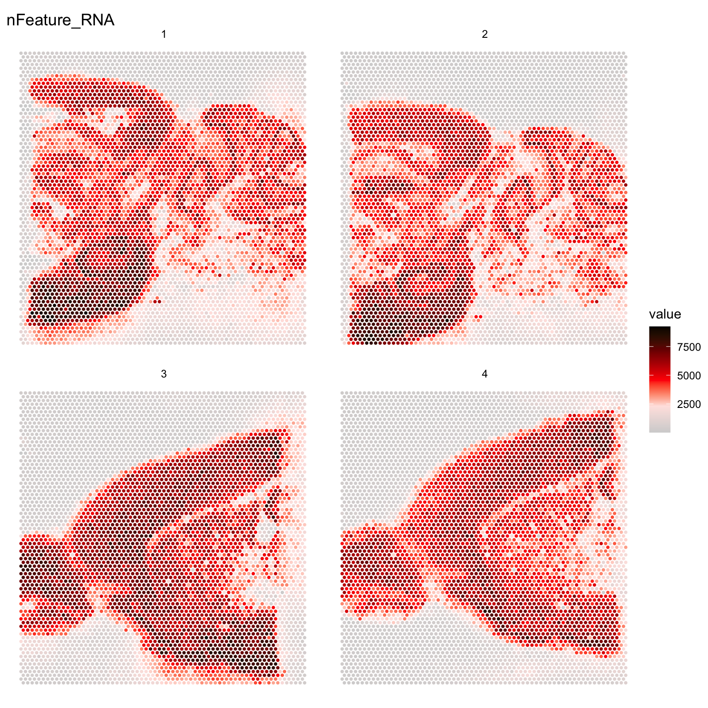
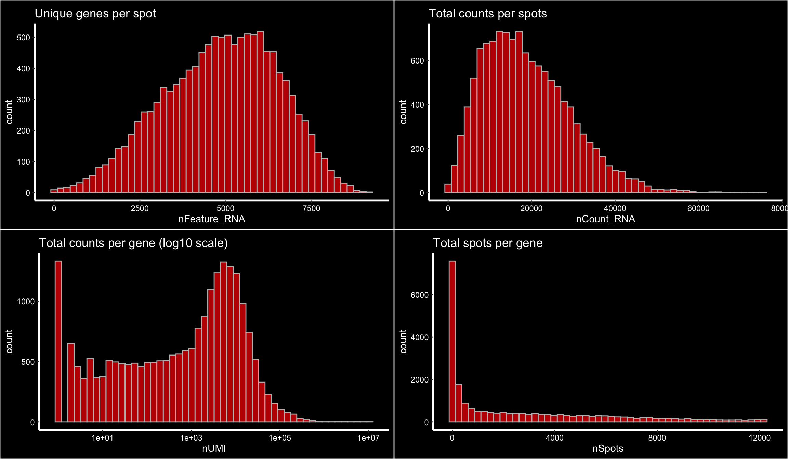
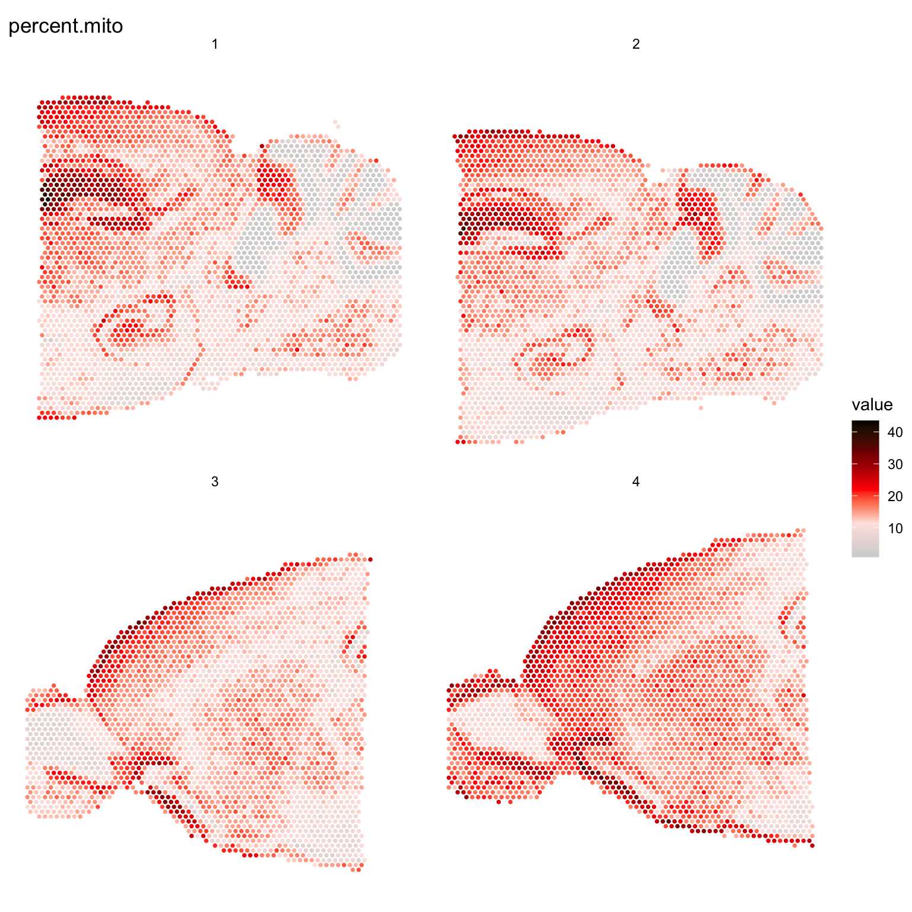
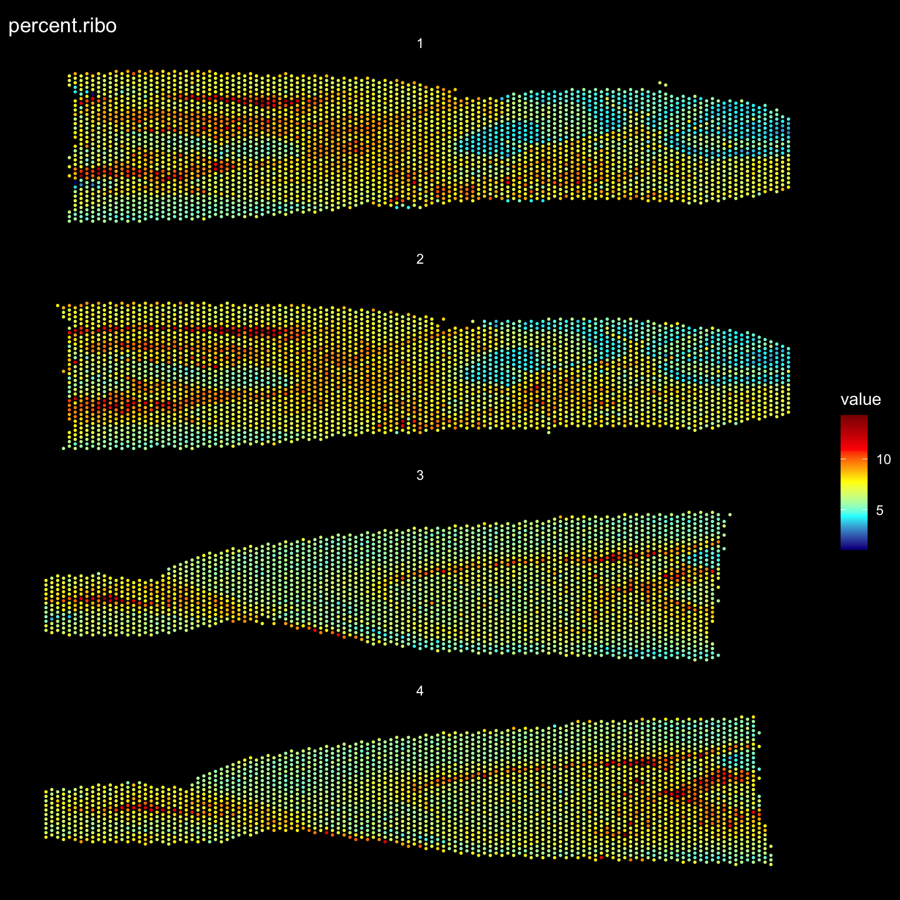

Last updated: 2020-06-05
Checks: 7 0
Knit directory: STUtility_web_site/
This reproducible R Markdown analysis was created with workflowr (version 1.6.2). The Checks tab describes the reproducibility checks that were applied when the results were created. The Past versions tab lists the development history.
Great! Since the R Markdown file has been committed to the Git repository, you know the exact version of the code that produced these results.
Great job! The global environment was empty. Objects defined in the global environment can affect the analysis in your R Markdown file in unknown ways. For reproduciblity it’s best to always run the code in an empty environment.
The command set.seed(20191031) was run prior to running the code in the R Markdown file. Setting a seed ensures that any results that rely on randomness, e.g. subsampling or permutations, are reproducible.
Great job! Recording the operating system, R version, and package versions is critical for reproducibility.
Nice! There were no cached chunks for this analysis, so you can be confident that you successfully produced the results during this run.
Great job! Using relative paths to the files within your workflowr project makes it easier to run your code on other machines.
Great! You are using Git for version control. Tracking code development and connecting the code version to the results is critical for reproducibility.
The results in this page were generated with repository version 42cb54d. See the Past versions tab to see a history of the changes made to the R Markdown and HTML files.
Note that you need to be careful to ensure that all relevant files for the analysis have been committed to Git prior to generating the results (you can use wflow_publish or wflow_git_commit). workflowr only checks the R Markdown file, but you know if there are other scripts or data files that it depends on. Below is the status of the Git repository when the results were generated:
Ignored files:
Ignored: .DS_Store
Ignored: analysis/.DS_Store
Ignored: analysis/manual_annotation.png
Ignored: analysis/visualization_3D.Rmd
Ignored: pre_data/
Unstaged changes:
Modified: analysis/_site.yml
Note that any generated files, e.g. HTML, png, CSS, etc., are not included in this status report because it is ok for generated content to have uncommitted changes.
These are the previous versions of the repository in which changes were made to the R Markdown (analysis/Quality_Control.Rmd) and HTML (docs/Quality_Control.html) files. If you’ve configured a remote Git repository (see ?wflow_git_remote), click on the hyperlinks in the table below to view the files as they were in that past version.
| File | Version | Author | Date | Message |
|---|---|---|---|---|
| html | 6606127 | Ludvig Larsson | 2020-06-05 | Build site. |
| html | f0ea9c1 | Ludvig Larsson | 2020-06-05 | Build site. |
| html | 651f315 | Ludvig Larsson | 2020-06-05 | Build site. |
| html | a6a0c51 | Ludvig Larsson | 2020-06-05 | Build site. |
| html | f3c5cb4 | Ludvig Larsson | 2020-06-05 | Build site. |
| html | f89df7e | Ludvig Larsson | 2020-06-05 | Build site. |
| html | 1e67a7c | Ludvig Larsson | 2020-06-04 | Build site. |
| html | f71b0c0 | Ludvig Larsson | 2020-06-04 | Build site. |
| Rmd | 90a45cc | Ludvig Larsson | 2020-06-04 | Fixed dataset in Load data |
| html | 8a54a4d | Ludvig Larsson | 2020-06-04 | Build site. |
| html | 5e466eb | Ludvig Larsson | 2020-06-04 | Build site. |
| Rmd | 4819d2b | Ludvig Larsson | 2020-06-04 | update website |
| html | 377408d | Ludvig Larsson | 2020-06-04 | Build site. |
| html | ed54ffb | Ludvig Larsson | 2020-06-04 | Build site. |
| html | f14518c | Ludvig Larsson | 2020-06-04 | Build site. |
| html | efd885b | Ludvig Larsson | 2020-06-04 | Build site. |
| html | 4f42429 | Ludvig Larsson | 2020-06-04 | Build site. |
| Rmd | 3660612 | Ludvig Larsson | 2020-06-04 | update website |
library(STutility)
library(ggplot2)Here we’ll go through some basic steps to assess the quality of your data and how to apply filters to remove low abundant genes and poor quality spots.
If you expect that you have over-permeabilized your tissue it could be useful to look at the expression patterns outside the tissue region as well. This can be done by loading the
Here we have a new infotable data.frame where the file paths in the “samples” column have been set to the "*raw_feature_bc_matrix.h5" matrrices instead of the filtered ones. Now we can load all spots into our Seurat object by setting disable.subset = TRUE.
infoTable samples
1 ~/10x/Public_data/S1_Sagittal_posterior/V1_Mouse_Brain_Sagittal_Posterior_raw_feature_bc_matrix.h5
2 ~/10x/Public_data/S2_Sagittal_posterior/V1_Mouse_Brain_Sagittal_Posterior_raw_feature_bc_matrix.h5
3 ~/10x/Public_data/S1_Sagittal_anterior/V1_Mouse_Brain_Sagittal_Anterior_raw_feature_bc_matrix.h5
4 ~/10x/Public_data/S2_Sagittal_anterior/V1_Mouse_Brain_Sagittal_Anterior_Section_2_raw_feature_bc_matrix.h5
imgs
1 ~/10x/Public_data/S1_Sagittal_posterior/tissue_hires_image.png
2 ~/10x/Public_data/S2_Sagittal_posterior/tissue_hires_image.png
3 ~/10x/Public_data/S1_Sagittal_anterior/tissue_hires_image.png
4 ~/10x/Public_data/S2_Sagittal_anterior/tissue_hires_image.png
spotfiles
1 ~/10x/Public_data/S1_Sagittal_posterior/tissue_positions_list.csv
2 ~/10x/Public_data/S2_Sagittal_posterior/tissue_positions_list.csv
3 ~/10x/Public_data/S1_Sagittal_anterior/tissue_positions_list.csv
4 ~/10x/Public_data/S2_Sagittal_anterior/tissue_positions_list.csv
json
1 ~/10x/Public_data/S1_Sagittal_posterior/scalefactors_json.json
2 ~/10x/Public_data/S2_Sagittal_posterior/scalefactors_json.json
3 ~/10x/Public_data/S1_Sagittal_anterior/scalefactors_json.json
4 ~/10x/Public_data/S2_Sagittal_anterior/scalefactors_json.jsonse <- InputFromTable(infoTable, disable.subset = TRUE)The tissue borders are quite easy to see in the plot but you can also see that there have been transcripts captured also outside of the tissue. During library preparation, transcripts can diffuse out into the solution and end up anywhere outside the tissue but we can know from the TO experiments that the transcripts captured under the tissue form a cDNA footprint that accurately reflects the tissue morphology and that the transcripts have diffused vertically from the cells in the tissue down onto the capture area surface.
It can be good to keep this in mind when you see that you have holes in your tissue with no cells. You might detect quite a lot of transcripts in such holes and it is therefore important to carefully remove spots that are not covered by cells. If the automatic tissue detection algorithm run by spaceranger fails to find such holes, it could be a good idea to manually remove them using Loupe Browser before running spaceranger.
ST.FeaturePlot(se, features = "nFeature_RNA", dark.theme = TRUE, cols = c("dark blue", "cyan", "yellow", "red", "dark red"))
Now let’s load the data with the subsetting enabled. Here we can use wither the raw matrices or the filtered matrices as long as we have spotfiles available in our infoTable data.frame which will be used to select the spots under tissue.
se <- InputFromTable(infoTable)Sometimes it can be a good idea to filter the data to remove low quality spots or low abundant genes. When running InputFromTable, spots with 0 counts will automatically be removed but you also have the option to filter the data directly using one of the following arguments:
You can also apply filters when the Seurat obect has been created which gives you more freedom to explore what could be a good threshold. Below we have plotted some basic features that you can use to define your filtering thresholds when running InputFromTable.
p1 <- ggplot() +
geom_histogram(data = se[[]], aes(nFeature_RNA), fill = "red", alpha = 0.7, color = "gray", bins = 50) +
Seurat::DarkTheme() +
ggtitle("Unique genes per spot")
p2 <- ggplot() +
geom_histogram(data = se[[]], aes(nCount_RNA), fill = "red", alpha = 0.7, color = "gray", bins = 50) +
Seurat::DarkTheme() +
ggtitle("Total counts per spots")
gene_attr <- data.frame(nUMI = Matrix::rowSums(se@assays$RNA@counts),
nSpots = Matrix::rowSums(se@assays$RNA@counts > 0))
p3 <- ggplot() +
geom_histogram(data = gene_attr, aes(nUMI), fill = "red", alpha = 0.7, color = "gray", bins = 50) +
Seurat::DarkTheme() +
scale_x_log10() +
ggtitle("Total counts per gene (log10 scale)")
p4 <- ggplot() +
geom_histogram(data = gene_attr, aes(nSpots), fill = "red", alpha = 0.7, color = "gray", bins = 50) +
Seurat::DarkTheme() +
ggtitle("Total spots per gene")
cowplot::plot_grid(p1, p2, p3, p4)
Let’s say that we want to remove all spots with fewer than 500 unique genes we can simply subset the using the SubsetSTData function and an expression.
NOTE: The Seurat package provides a subset method for Seurat objects but unfotunately this method will not work when using STUtility.
se.subset <- SubsetSTData(se, expression = nFeature_RNA > 500)
cat("Spots removed: ", ncol(se) - ncol(se.subset), "\n")Spots removed: 42 It can also be useful to explore other features of the dataset to use for filtering, for example mitochondrial transcript content or ribosomal protein coding transcript content. Mitochondrial genes are prefixed with “mt-” in MGI nomenclature so we can collect these genes and then calculate the percentage of mitochondrial content per spot and add this information to our meta.data.
# Collect all genes coded on the mitochondrial genome
mt.genes <- grep(pattern = "^mt-", x = rownames(se), value = TRUE)
se$percent.mito <- (Matrix::colSums(se@assays$RNA@counts[mt.genes, ])/Matrix::colSums(se@assays$RNA@counts))*100
# Collect all genes coding for ribosomal proteins
rp.genes <- grep(pattern = "^Rpl|^Rps", x = rownames(se), value = TRUE)
se$percent.ribo <- (Matrix::colSums(se@assays$RNA@counts[rp.genes, ])/Matrix::colSums(se@assays$RNA@counts))*100
ST.FeaturePlot(se, features = "percent.mito", dark.theme = TRUE, cols = c("dark blue", "cyan", "yellow", "red", "dark red"))
ST.FeaturePlot(se, features = "percent.ribo", dark.theme = TRUE, cols = c("dark blue", "cyan", "yellow", "red", "dark red"))
We can also combine different thresholds to filter the data. Let’s say that we want to remove all spots with fewer than 500 unique genes and also spots with a high mitochondrial transcript content (>30%).
# Keep spots with more than 500 unique genes and less than 30% mitochondrial content
se.subset <- SubsetSTData(se, expression = nFeature_RNA > 500 & percent.mito < 30)
cat("Spots removed: ", ncol(se) - ncol(se.subset), "\n")Spots removed: 180 If you have good reson to remove a certain type of gene, this can also be done quite easily as well. For example, you might want to keep only protein coding genes in your dataset. Here we demonstrate how to subset a Seurat object to include only protein coding genes using our predefined covnersion table, but you could also get this information elsewhere, e.g. bioMart.
ensids <- read.table(file = list.files(system.file("extdata", package = "STutility"), full.names = T, pattern = "mouse_genes"), header = T, sep = "\t", stringsAsFactors = F)
# Print available biotypes
unique(ensids$gene_type)
keep.genes <- subset(ensids, gene_type %in% "protein_coding")$gene_name
# Subset Seurat object
se.subset <- se[intersect(rownames(se), keep.genes), ]
cat("Number of genes removed : ", nrow(se) - nrow(se.subset), "\n")A work by Joseph Bergenstråhle and Ludvig Larsson
sessionInfo()R version 4.0.0 (2020-04-24)
Platform: x86_64-apple-darwin17.0 (64-bit)
Running under: macOS Mojave 10.14.6
Matrix products: default
BLAS: /Library/Frameworks/R.framework/Versions/4.0/Resources/lib/libRblas.dylib
LAPACK: /Library/Frameworks/R.framework/Versions/4.0/Resources/lib/libRlapack.dylib
Random number generation:
RNG: Mersenne-Twister
Normal: Inversion
Sample: Rounding
locale:
[1] en_US.UTF-8/en_US.UTF-8/en_US.UTF-8/C/en_US.UTF-8/en_US.UTF-8
attached base packages:
[1] parallel stats4 stats graphics grDevices utils datasets
[8] methods base
other attached packages:
[1] STutility_0.1.0 ggplot2_3.3.0
[3] SingleCellExperiment_1.10.1 SummarizedExperiment_1.18.1
[5] DelayedArray_0.14.0 matrixStats_0.56.0
[7] Biobase_2.48.0 GenomicRanges_1.40.0
[9] GenomeInfoDb_1.24.0 IRanges_2.22.1
[11] S4Vectors_0.26.0 BiocGenerics_0.34.0
[13] Seurat_3.1.5 workflowr_1.6.2
loaded via a namespace (and not attached):
[1] reticulate_1.15 tidyselect_1.0.0 htmlwidgets_1.5.1
[4] grid_4.0.0 Rtsne_0.15 munsell_0.5.0
[7] codetools_0.2-16 ica_1.0-2 units_0.6-6
[10] future_1.17.0 miniUI_0.1.1.1 withr_2.2.0
[13] colorspace_1.4-1 knitr_1.28 uuid_0.1-4
[16] ROCR_1.0-11 tensor_1.5 listenv_0.8.0
[19] labeling_0.3 git2r_0.27.1 GenomeInfoDbData_1.2.3
[22] polyclip_1.10-0 farver_2.0.3 rprojroot_1.3-2
[25] coda_0.19-3 LearnBayes_2.15.1 vctrs_0.3.0
[28] xfun_0.13 R6_2.4.1 doParallel_1.0.15
[31] rsvd_1.0.3 Morpho_2.8 ggiraph_0.7.0
[34] manipulateWidget_0.10.1 bitops_1.0-6 spatstat.utils_1.17-0
[37] assertthat_0.2.1 promises_1.1.0 scales_1.1.0
[40] imager_0.42.1 gtable_0.3.0 npsurv_0.4-0.1
[43] globals_0.12.5 bmp_0.3 goftest_1.2-2
[46] rlang_0.4.6 zeallot_0.1.0 akima_0.6-2
[49] systemfonts_0.2.1 splines_4.0.0 lazyeval_0.2.2
[52] rgl_0.100.54 yaml_2.2.1 reshape2_1.4.4
[55] abind_1.4-5 crosstalk_1.1.0.1 backports_1.1.6
[58] httpuv_1.5.2 tools_4.0.0 spData_0.3.5
[61] ellipsis_0.3.0 raster_3.1-5 RColorBrewer_1.1-2
[64] Rvcg_0.19.1 ggridges_0.5.2 Rcpp_1.0.4.6
[67] plyr_1.8.6 zlibbioc_1.34.0 classInt_0.4-3
[70] purrr_0.3.4 RCurl_1.98-1.2 rpart_4.1-15
[73] dbscan_1.1-5 deldir_0.1-25 viridis_0.5.1
[76] pbapply_1.4-2 cowplot_1.0.0 zoo_1.8-8
[79] ggrepel_0.8.2 cluster_2.1.0 colorRamps_2.3
[82] fs_1.4.1 magrittr_1.5 data.table_1.12.8
[85] magick_2.3 readbitmap_0.1.5 gmodels_2.18.1
[88] lmtest_0.9-37 RANN_2.6.1 whisker_0.4
[91] fitdistrplus_1.0-14 patchwork_1.0.0 shinyjs_1.1
[94] lsei_1.2-0.1 mime_0.9 evaluate_0.14
[97] xtable_1.8-4 jpeg_0.1-8.1 gridExtra_2.3
[100] compiler_4.0.0 tibble_3.0.1 KernSmooth_2.23-17
[103] crayon_1.3.4 htmltools_0.4.0 mgcv_1.8-31
[106] later_1.0.0 spdep_1.1-3 tiff_0.1-5
[109] tidyr_1.0.3 expm_0.999-4 DBI_1.1.0
[112] MASS_7.3-51.6 sf_0.9-3 boot_1.3-25
[115] Matrix_1.2-18 gdata_2.18.0 igraph_1.2.5
[118] pkgconfig_2.0.3 sp_1.4-1 plotly_4.9.2.1
[121] xml2_1.3.2 foreach_1.5.0 webshot_0.5.2
[124] XVector_0.28.0 stringr_1.4.0 digest_0.6.25
[127] sctransform_0.2.1 RcppAnnoy_0.0.16 tsne_0.1-3
[130] spatstat.data_1.4-3 rmarkdown_2.1 leiden_0.3.3
[133] uwot_0.1.8 gdtools_0.2.2 gtools_3.8.2
[136] shiny_1.4.0.2 lifecycle_0.2.0 nlme_3.1-147
[139] jsonlite_1.6.1 viridisLite_0.3.0 pillar_1.4.4
[142] lattice_0.20-41 fastmap_1.0.1 httr_1.4.1
[145] survival_3.1-12 glue_1.4.0 spatstat_1.63-3
[148] png_0.1-7 iterators_1.0.12 class_7.3-17
[151] stringi_1.4.6 dplyr_0.8.5 irlba_2.3.3
[154] e1071_1.7-3 future.apply_1.5.0 ape_5.3